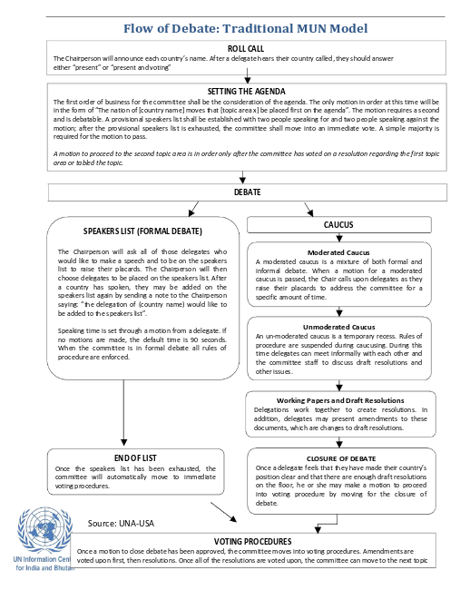

Like real UN bodies, Model UN committees have lengthy agendas and many delegates who want to convey their country's positions. To help maintain order, Model UN conferences adopt rules of procedure to establish when a delegate may speak and what he or she may address. Some conferences adopt a few simple rules, while others use lengthy and complex rules of procedure. Because each conference is independent – there is no governing body for Model UN – rules of procedure vary. A few conferences adapt their rules of procedure directly from the United Nations rules while most use variations of the Roberts Rules of Order. It is essential to familiarize yourself with the rules of each specific conference you plan to attend.
At a Model UN conference, there is formal debate as well as informal debate, called caucusing.
Formal Debate:
During formal debate, the staff maintains a speakers list and delegates speak in the order they are listed. At this time, delegates have an opportunity to share their views with the entire committee. Delegates make speeches, answer questions, and introduce and debate resolutions and amendments. Formal debate is important to the committee\'s work. By not knowing the rules of procedure, delegates slow down the debate and hold back their committee\'s progress.
Moderated Caucus:
During a caucus, which is a temporary recess, the rules of procedure are suspended. To go to a moderated caucus, a delegate makes a motion to suspend debate and the committee votes. Caucusing helps to facilitate discussion, especially when there is a long speakers list. A moderated caucus is a mixture of both formal and informal debate. Anyone may speak if they raise their placard and are called on by the Chair.
.Unmoderated Caucus: In an unmoderated caucus, delegates meet informally with one another and the committee staff to discuss and negotiate draft resolutions, amendments and other issues.

The preamble of a draft resolution states the reasons for which the committee is addressing the topic and highlights past international action on the issue. Each clause begins with a present participle (called a preambulatory phrase) and ends with a comma.
Sample Preambulatory PhrasesAffirming
Alarmed by
Approving
Bearing in mind
Believing
Confident
Contemplating
Convinced
Declaring
Deeply concerned
Deeply conscious
Deeply convinced
Deeply Disturbed
Deeply Regretting
Desiring
Emphasizing
Expecting
Emphasizing
Expecting
Expressing it’s appreciation
Fulfilling
Fully aware
Emphasizing
Expecting
Expressing it’s appreciation
Fulfilling
Fully aware
Further deploring
Further recalling
Guided by
Having adopted
Having considered
Having examined
Having received
Keeping in min
Noting with deep concern
Nothing with satisfaction
Noting further
Observing
Reaffirming
Realizing
Recalling
Recognizing
Referring
Seeking
Taking into consideration
Taking note
Viewing with appreciation
Welcoming
Operative clauses offer solutions to issues addressed earlier in a resolution through the perambulatory section. These clauses are action oriented and should include both an underlined verb at the beginning of your sentence followed by the proposed solution.
Sample Operative Phrases
Accepts
Affirms
Approves
Authorizes
Calls
Calls upon
Condemns
Confirms
Congratulates
Considers
Declares accordingly
Deplores
Designates
Draws the attention
Emphasizes
Encourages
Endorses
Expresses its appreciation
Expresses its hope
Further invites
Further proclaims
Further reminds
Further recommends
Further requests
Further resolves
Has resolved
Notes
Proclaims
Reaffirms
Recommends
Regrets
Reminds
Requests
Solemnly affirms
Strongly condemns
Supports
Takes note of
Transmits
Trusts
Preamble
Whereas recognition of the inherent dignity and of the equal and inalienable rights of all members of the human family is the foundation of freedom, justice and peace in the world,
Whereas disregard and contempt for human rights have resulted in barbarous acts which have outraged the conscience of mankind, and the advent of a world in which human beings shall enjoy freedom of speech and belief and freedom from fear and want has been proclaimed as the highest aspiration of the common people,
Whereas it is essential, if man is not to be compelled to have recourse, as a last resort, to rebellion against tyranny and oppression, that human rights should be protected by the rule of law,
Whereas it is essential to promote the development of friendly relations between nations,
Whereas the peoples of the United Nations have in the Charter reaffirmed their faith in fundamental human rights, in the dignity and worth of the human person and in the equal rights of men and women and have determined to promote social progress and better standards of life in larger freedom,
Whereas Member States have pledged themselves to achieve, in co-operation with the United Nations, the promotion of universal respect for and observance of human rights and fundamental freedoms,
Whereas a common understanding of these rights and freedoms is of the greatest importance for the full realization of this pledge,
Now, Therefore THE GENERAL ASSEMBLY proclaims THIS UNIVERSAL DECLARATION OF HUMAN RIGHTS as a common standard of achievement for all peoples and all nations, to the end that every individual and every organ of society, keeping this Declaration constantly in mind, shall strive by teaching and education to promote respect for these rights and freedoms and by progressive measures, national and international, to secure their universal and effective recognition and observance, both among the peoples of Member States themselves and among the peoples of territories under their jurisdiction.
Article 1.
All human beings are born free and equal in dignity and rights. They are endowed with reason and conscience and should act towards one another in a spirit of brotherhood.
Article 2.
Everyone is entitled to all the rights and freedoms set forth in this Declaration, without distinction of any kind, such as race, colour, sex, language, religion, political or other opinion, national or social origin, property, birth or other status. Furthermore, no distinction shall be made on the basis of the political, jurisdictional or international status of the country or territory to which a person belongs, whether it be independent, trust, non-self-governing or under any other limitation of sovereignty.
Article 3.
Everyone has the right to life, liberty and security of person.
Article 4.
No one shall be held in slavery or servitude; slavery and the slave trade shall be prohibited in all their forms.
Article 5.
No one shall be subjected to torture or to cruel, inhuman or degrading treatment or punishment.
Article 6.
Everyone has the right to recognition everywhere as a person before the law.
Article 7.
All are equal before the law and are entitled without any discrimination to equal protection of the law. All are entitled to equal protection against any discrimination in violation of this Declaration and against any incitement to such discrimination.
Article 8.
Everyone has the right to an effective remedy by the competent national tribunals for acts violating the fundamental rights granted him by the constitution or by law.
Article 9.
No one shall be subjected to arbitrary arrest, detention or exile.
Article 10.
Everyone is entitled in full equality to a fair and public hearing by an independent and impartial tribunal, in the determination of his rights and obligations and of any criminal charge against him.
Article 11.
(1) Everyone charged with a penal offence has the right to be presumed innocent until proved guilty according to law in a public trial at which he has had all the guarantees necessary for his defence.
(2) No one shall be held guilty of any penal offence on account of any act or omission which did not constitute a penal offence, under national or international law, at the time when it was committed. Nor shall a heavier penalty be imposed than the one that was applicable at the time the penal offence was committed.
Article 12.
No one shall be subjected to arbitrary interference with his privacy, family, home or correspondence, nor to attacks upon his honour and reputation. Everyone has the right to the protection of the law against such interference or attacks.
Article 13.
(1) Everyone has the right to freedom of movement and residence within the borders of each state.
(2) Everyone has the right to leave any country, including his own, and to return to his country
Article 14.
(1) Everyone has the right to seek and to enjoy in other countries asylum from persecution.
(2) This right may not be invoked in the case of prosecutions genuinely arising from non-political crimes or from acts contrary to the purposes and principles of the United Nations.
Article 15.
(1) Everyone has the right to a nationality.
(2) No one shall be arbitrarily deprived of his nationality nor denied the right to change his nationality.
Article 16.
(1) Men and women of full age, without any limitation due to race, nationality or religion, have the right to marry and to found a family. They are entitled to equal rights as to marriage, during marriage and at its dissolution.
(2) Marriage shall be entered into only with the free and full consent of the intending spouses.
(3) The family is the natural and fundamental group unit of society and is entitled to protection by society and the State.
Article 17.
(1) Everyone has the right to own property alone as well as in association with others.
(2) No one shall be arbitrarily deprived of his property
Article 18.
Everyone has the right to freedom of thought, conscience and religion; this right includes freedom to change his religion or belief, and freedom, either alone or in community with others and in public or private, to manifest his religion or belief in teaching, practice, worship and observance.
Article 19.
Everyone has the right to freedom of opinion and expression; this right includes freedom to hold opinions without interference and to seek, receive and impart information and ideas through any media and regardless of frontiers.
Article 20.
(1) Everyone has the right to freedom of peaceful assembly and association.
(2) No one may be compelled to belong to an association.
Article 21
(1) Everyone has the right to take part in the government of his country, directly or through freely chosen representatives.
(2) Everyone has the right of equal access to public service in his country.
(3) The will of the people shall be the basis of the authority of government; this will shall be expressed in periodic and genuine elections which shall be by universal and equal suffrage and shall be held by secret vote or by equivalent free voting procedures.
Article 22.
Everyone, as a member of society, has the right to social security and is entitled to realization, through national effort and international co-operation and in accordance with the organization and resources of each State, of the economic, social and cultural rights indispensable for his dignity and the free development of his personality.
Article 23.
(1) Everyone has the right to work, to free choice of employment, to just and favourable conditions of work and to protection against unemployment.
(2) Everyone, without any discrimination, has the right to equal pay for equal work.
(3) Everyone who works has the right to just and favourable remuneration ensuring for himself and his family an existence worthy of human dignity, and supplemented, if necessary, by other means of social protection.
(4) Everyone has the right to form and to join trade unions for the protection of his interests.
Article 24.
Everyone has the right to rest and leisure, including reasonable limitation of working hours and periodic holidays with pay.
Article 25.
(1) Everyone has the right to a standard of living adequate for the health and well-being of himself and of his family, including food, clothing, housing and medical care and necessary social services, and the right to security in the event of unemployment, sickness, disability, widowhood, old age or other lack of livelihood in circumstances beyond his control.
(2) Motherhood and childhood are entitled to special care and assistance. All children, whether born in or out of wedlock, shall enjoy the same social protection.
Article 26.
(1) Everyone has the right to education. Education shall be free, at least in the elementary and fundamental stages. Elementary education shall be compulsory. Technical and professional education shall be made generally available and higher education shall be equally accessible to all on the basis of merit.
(2) Education shall be directed to the full development of the human personality and to the strengthening of respect for human rights and fundamental freedoms. It shall promote understanding, tolerance and friendship among all nations, racial or religious groups, and shall further the activities of the United Nations for the maintenance of peace.
(3) Parents have a prior right to choose the kind of education that shall be given to their children.
Article 27.
(1) Everyone has the right freely to participate in the cultural life of the community, to enjoy the arts and to share in scientific advancement and its benefits.
(2) Everyone has the right to the protection of the moral and material interests resulting from any scientific, literary or artistic production of which he is the author.
Article 28.
Everyone is entitled to a social and international order in which the rights and freedoms set forth in this Declaration can be fully realized.
Article 29.
(1) Everyone has duties to the community in which alone the free and full development of his personality is possible.
(2) In the exercise of his rights and freedoms, everyone shall be subject only to such limitations as are determined by law solely for the purpose of securing due recognition and respect for the rights and freedoms of others and of meeting the just requirements of morality, public order and the general welfare in a democratic society.
(3) These rights and freedoms may in no case be exercised contrary to the purposes and principles of the United Nations.
Article 30.
Nothing in this Declaration may be interpreted as implying for any State, group or person any right to engage in any activity or to perform any act aimed at the destruction of any of the rights and freedoms set forth herein.